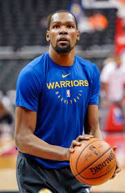
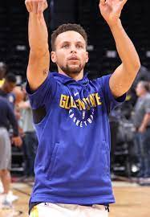

LeBron Raymone James Sr. is an American professional basketball player for the Los Angeles Lakers of the National Basketball Association (NBA). Nicknamed "King James", he is widely considered one of the greatest players in NBA history and is frequently compared to Michael Jordan in debates over the greatest basketball player ever.[1] The only player to have won NBA championships with three franchises (the Cleveland Cavaliers, the Miami Heat, and the Lakers) as NBA Finals MVP,[2] James has competed in ten NBA Finals, eight of them consecutively with the Heat and the Cavaliers from 2011 to 2018.
rudy gobert
Rudy Gobert-Bourgarel (/ɡoʊˈbɛər/ goh-BEAR;[1] born June 26, 1992) is a French professional basketball player of the Utah Jazz of the National Basketball Association (NBA). He also represents the French national team in their international competitions. Standing at 7 ft 1 in (2.16 m) tall with a wingspan of 7 ft 9 in (2.36 m) long, he plays the center position. He is considered one of the NBA’s best rim protectors.
kevin durant

Kevin Wayne Durant (/dəˈrænt/; born September 29, 1988), also known simply by his initials KD, is an American professional basketball player for the Brooklyn Nets of the National Basketball Association (NBA). He played one season of college basketball for the Texas Longhorns, and was selected as the second overall pick by the Seattle SuperSonics in the 2007 NBA draft. He played nine seasons with the franchise, which became the Oklahoma City Thunder in 2008, before signing with the Golden State Warriors in 2016, winning back-to-back championships in 2017 and 2018. After sustaining an Achilles injury in the 2019 finals, he joined the Nets as a free agent that summer.
klay thompson
Klay Alexander Thompson (born February 8, 1990)[1] is an American professional basketball player for the Golden State Warriors of the National Basketball Association (NBA). He is credited as one of the greatest shooters in NBA history.[2][3] A three-time NBA champion with the Warriors, he is a five-time NBA All-Star and a two-time All-NBA Third Team honoree. He has also been named to the NBA All-Defensive Second Team.
stephen curry

Wardell Stephen Curry II (/ˈstɛfən/ STEF-ən; born March 14, 1988[1]), also known as Steph Curry, is an American professional basketball player for the Golden State Warriors of the National Basketball Association (NBA). He plays the point guard position, and is widely regarded as one of the greatest point guards of all time.
damian lillard
Damian Lamonte Ollie Lillard Sr. (born July 15, 1990[1]) is an American professional basketball player for the Portland Trail Blazers of the National Basketball Association (NBA). He played college basketball for the Weber State Wildcats and earned third-team All-American honors in 2012.